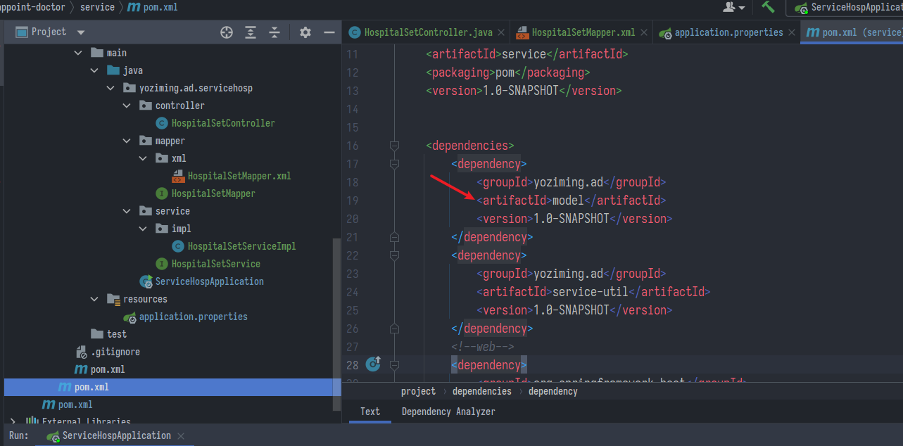
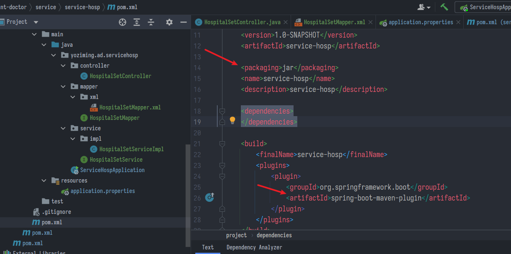
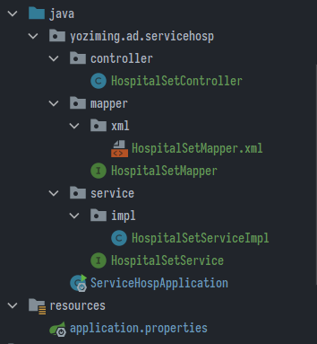
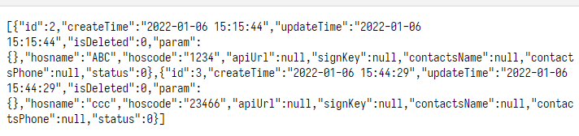
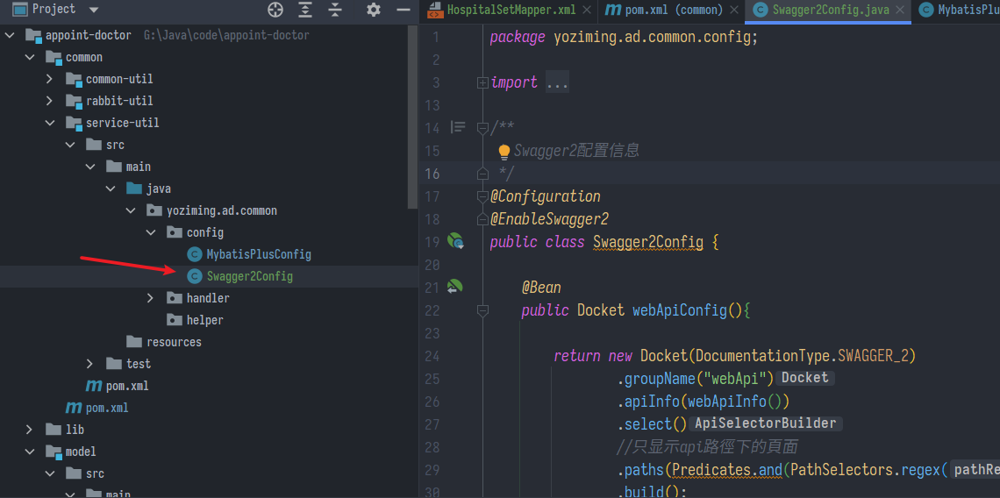
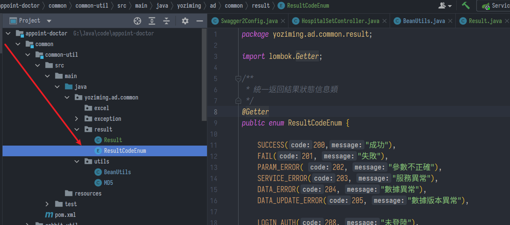
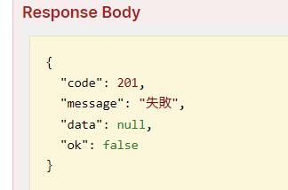
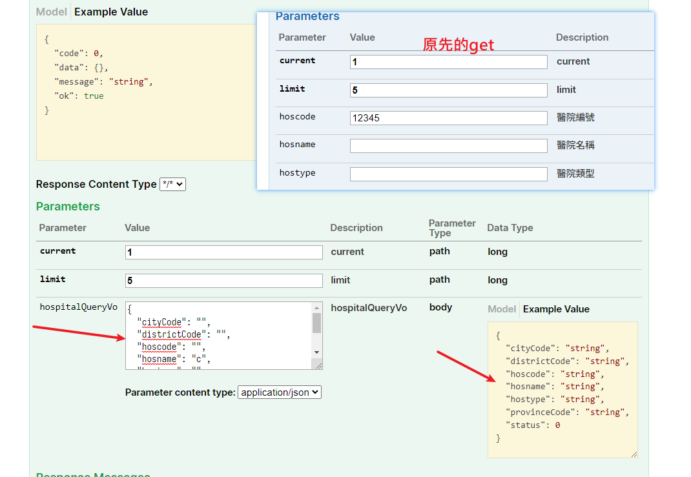
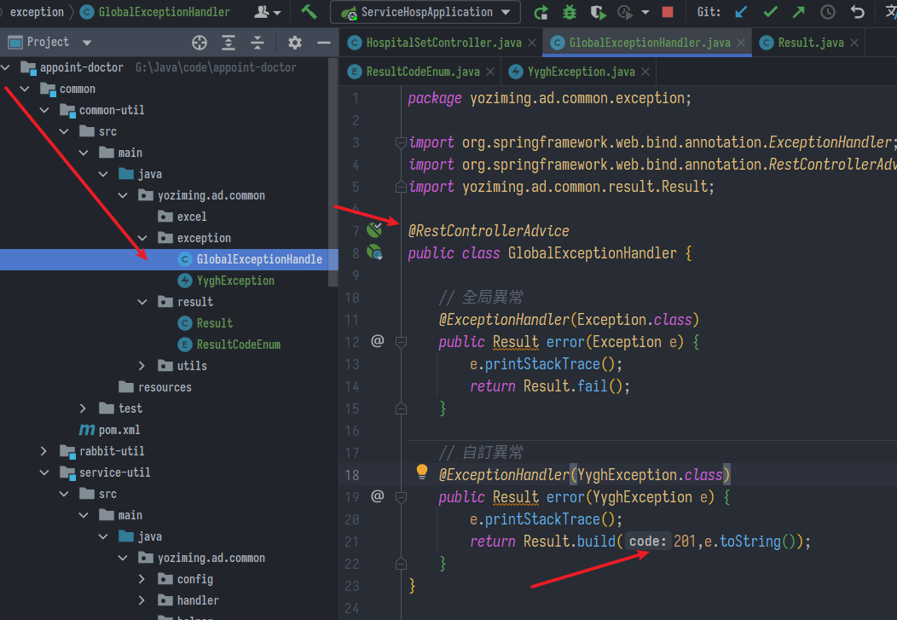
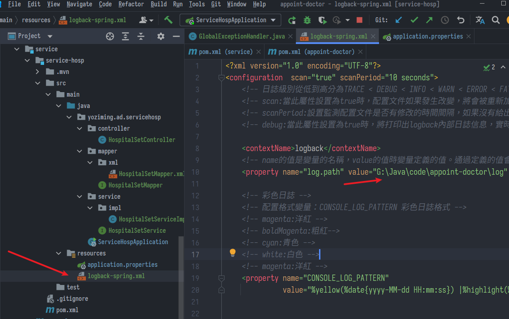

醫院設定模組、swagger2、統一返回/異常/日誌
尚硅谷Spring筆記-03
搭建醫院設定模組
service-hosp，提供查詢與管理醫院設定
- 首先父節點service的pom已經將model設為依賴，可以引用其下的實體類model

- 進到service-hosp修改pom，引用
spring-boot-maven-plugin，讓maven打包的時候把依賴也包進去，包成一個可以直接執行的jar包

- 添加
application.properties，指定服務連接的名稱、端口、資料庫連接等等
# 服務端口
server.port=8201
# 服務名
spring.application.name=service-hosp
# 環境設置：dev、test、prod
spring.profiles.active=dev
# mysql資料庫連接
spring.datasource.driver-class-name=com.mysql.cj.jdbc.Driver
spring.datasource.url=jdbc:mysql://localhost:3306/yygh_hosp?characterEncoding=utf-8&useSSL=false&serverTimezone=GMT%2B8
spring.datasource.username=root
spring.datasource.password=1234
#返回json的全局時間格式
spring.jackson.date-format=yyyy-MM-dd HH:mm:ss
spring.jackson.time-zone=GMT+8
- 創建當前包
servicehosp，加入啟動類
package yoziming.ad.servicehosp
@SpringBootApplication
public class ServiceHospApplication {
public static void main(String[] args) {
SpringApplication.run(ServiceHospApplication.class, args);
}
}
- 在
yoziming.ad.servicehosp包下新增三個包controller、mapper、service，實現mybatis+的要求以執行CRUD操作

mapper下新增接口，繼承BaseMapper<bean>
@Mapper
public interface HospitalSetMapper extends BaseMapper<HospitalSet> {
}
service下新增接口，繼承IService<bean>
public interface HospitalSetService extends IService<HospitalSet> {
}
service下再增加impl包，放實現類，繼承ServiceImpl<剛創的Mapper,bean>，實現接口
@Service
public class HospitalSetServiceImpl extends ServiceImpl<HospitalSetMapper, HospitalSet> implements HospitalSetService {
}
Controller綁定網址，注入service，即可開始業務邏輯
@RestController
@RequestMapping("/admin/hosp/hospitalSet")
public class HospitalSetController {
// 注入service
@Autowired
private HospitalSetService hospitalSetService;
// 查詢醫院表所有訊息
@GetMapping("findAll")
public List<HospitalSet> findAllHospitalSet(){
return hospitalSetService.list();
}
// 邏輯刪除指定醫院
@DeleteMapping("{id}")
public boolean removeHospSet(@PathVariable Long id){
return hospitalSetService.removeById(id);
}
}
@GetMapping
等同於
@RequestMapping(method = RequestMethod.GET)
@PathVariable
知識點
使用@RequestParam時，
URL是這樣的：http://host:port/path?引數名=引數值
使用@PathVariable時，
URL是這樣的：http://host:port/path/引數值
測試
- 由於課件資料庫那邊是空的，到資料庫hospital_set中先隨便新增一筆資料，開瀏覽器訪問設定的網址
- http://localhost:8201/admin/hosp/hospitalSet/findAll

- 返回類似這樣的json串，但刪除就不好測試了，需要用postman或swagger
swagger2
- 引入依賴，由於整個專案都會用到，引用於
<artifactId>common</artifactId>
<!--swagger-->
<dependency>
<groupId>io.springfox</groupId>
<artifactId>springfox-swagger2</artifactId>
</dependency>
<dependency>
<groupId>io.springfox</groupId>
<artifactId>springfox-swagger-ui</artifactId>
</dependency>
- 層層模組依賴關係要注意
- common模組之下有service-util子模組
- service模組依賴引用了model模組與service-util模組
- 在
yoziming.ad.common.config包貼上現成的工具類

- 回到service-hosp模組，
servicehosp啟動類，加上註解讓它掃描整個專案包的插件
@SpringBootApplication
@ComponentScan(basePackages = "yoziming.ad")
public class ServiceHospApplication {
- 訪問 http://localhost:8201/swagger-ui.html

- 右上角API切換欄就是
Swagger2Config裡面Docket的設定 - 改造Controller，加上@Api註解
@Api(tags = "醫院設定管理")
@RestController
@RequestMapping("/admin/hosp/hospitalSet")
public class HospitalSetController {
// 注入service
@Autowired
private HospitalSetService hospitalSetService;
// 查詢醫院表所有訊息
@ApiOperation("查詢所有醫院設定訊息")
@GetMapping("findAll")
public List<HospitalSet> findAllHospitalSet(){
return hospitalSetService.list();
}
// 邏輯刪除指定醫院
@ApiOperation("邏輯刪除指定醫院設定")
@ApiParam(name = "id",value = "醫院設定id",required = true)
@DeleteMapping("{id}")
public boolean removeHospSet(@PathVariable Long id){
return hospitalSetService.removeById(id);
}
}
統一返回結果
spring內建有ResponseEntity其實也是一樣的用法
- 在common-util模組下建立yoziming.ad.common.result包
- 導入造好的工具類，返回統一為Result類，自帶泛型裝資料(比如List、boolean那些，類中有靜態方法用來裝)、代號、訊息


- service-util模組依賴引用common-util就不多說了
- 回頭改造Controller，
// 查詢醫院表所有訊息
@ApiOperation("查詢所有醫院設定訊息")
@GetMapping("findAll")
public Result findAllHospitalSet() {
return Result.ok(hospitalSetService.list());
}
// 邏輯刪除指定醫院
@ApiOperation("邏輯刪除指定醫院設定")
@ApiParam(name = "id", value = "醫院設定id", required = true)
@DeleteMapping("{id}")
public Result removeHospSet(@PathVariable Long id) {
return hospitalSetService.removeById(id) ? Result.ok() : Result.fail();
}
- 現在可以看到類似這樣的結果了

條件查詢帶分頁
- 建立對應的VO類，這邊model模組下的實體類已經導好了

- 回到Controller
// 條件查詢帶分頁
@PostMapping("findPageHospSet/{current}/{limit}")
public Result findPageHospSet(@PathVariable long current,
@PathVariable long limit,
@RequestBody(required = false) HospitalQueryVo hospitalQueryVo) {
// 建造Page物件，引用是mp的
Page<HospitalSet> page=new Page<>(current,limit);
// 設定查詢條件
QueryWrapper<HospitalSet> qw =new QueryWrapper<>();
// 先判斷傳來的資料是不是空
String hosname = hospitalQueryVo.getHosname(); // 醫院名
String hoscode = hospitalQueryVo.getHoscode(); // 醫院編號
if (!StringUtils.isEmpty(hosname)){
// 第一個參數是資料庫中欄位名稱
qw.like("hosname",hosname);
}
if (!StringUtils.isEmpty(hoscode)){
qw.like("hoscode",hoscode);
}
// 查詢並返回
Page<HospitalSet> resPage = hospitalSetService.page(page, qw);
return Result.ok(resPage);
}
@RequestBody
知識點
- 表示前端傳來的是json格式，框架會自己解析
- required = false表示不一定要有(預設是true)
- 由於用了@RequestBody，請求就不能是get，所以轉@PostMapping

- 右邊可以複製範例，但注意填入json最後一行不要加
,
其他功能
// 添加醫院設定
@ApiOperation("添加醫院設定")
@PostMapping("saveHospitalSet")
public Result saveHospitalSet(@RequestBody HospitalSet hospitalSet) {
// 設定醫院狀態，1可用，0不可用
hospitalSet.setStatus(1);
// 隨機生成32位簽名密鑰
Random random = new Random();
hospitalSet.setSignKey(MD5.encrypt(System.currentTimeMillis() + "" + random.nextInt(1000)));
// 返回
return hospitalSetService.save(hospitalSet) ? Result.ok() : Result.fail();
}
// 根據id查醫院
@ApiOperation("根據id查醫院設定訊息")
@GetMapping("getHospitalSet/{id}")
public Result getHospitalSet(@PathVariable Long id) {
return Result.ok(hospitalSetService.getById(id));
}
// 修改醫院設定
@ApiOperation("修改醫院設定")
@PostMapping("updateHospitalSet")
public Result updateHospitalSet(@RequestBody HospitalSet hospitalSet) {
return hospitalSetService.updateById(hospitalSet) ? Result.ok() : Result.fail();
}
// 批量刪除醫院設定
@ApiOperation("批量刪除醫院設定")
@DeleteMapping("batchRemove")
public Result batchRemove(@RequestBody List<Long> idList) {
return hospitalSetService.removeByIds(idList) ? Result.ok() : Result.fail();
}
// 修改醫院鎖定狀態
@ApiOperation("修改醫院鎖定狀態")
@PutMapping("lockHospitalSet/{id}/{status}")
public Result lockHospitalSet(@PathVariable Long id,
@PathVariable Integer status) {
HospitalSet hospitalSet = hospitalSetService.getById(id);
hospitalSet.setStatus(status);
return hospitalSetService.updateById(hospitalSet) ? Result.ok() : Result.fail();
}
// 發送密鑰
@ApiOperation("發送密鑰")
@PostMapping("sendKey/{id}")
public Result sendKey(@PathVariable Long id) {
HospitalSet hospitalSet = hospitalSetService.getById(id);
String signKey = hospitalSet.getSignKey();
String hoscode = hospitalSet.getHoscode();
// TODO 簡訊驗證
return Result.ok();
}
統一異常處理
目標在於出錯時不會只送前端一個500跟亂七八糟的，而是捕捉異常訊息並用json傳過去
- 回到common-util模組建立
yoziming.ad.common.exception包，建立GlobalExceptionHandler全局異常處理類，然後再引入自訂異常類YyghException

@RestControllerAdvice
public class GlobalExceptionHandler {
// 全局異常
@ExceptionHandler(Exception.class)
public Result error(Exception e) {
e.printStackTrace();
return Result.fail();
}
// 自訂異常
@ExceptionHandler(YyghException.class)
public Result error(YyghException e) {
e.printStackTrace();
return Result.build(201,e.toString());
}
}
- @ControllerAdvice用來捕捉@Controller拋出的異常
- @ExceptionHandler指定Exception類型
- @ResponseBody用json返回輸出的結果
- @RestControllerAdvice = @ControllerAdvice + @ResponseBody
- 自訂異常返回設定的編號或訊息
統一日誌管理
- spring內建日誌級別分為:OFF、FATAL、ERROR、WARN、INFO、DEBUG、ALL
- 預設情況下從控制台列印出來的日誌級別只有INFO以上，可以到
application.properties配置
# 設置日誌級別
logging.level.root=WARN
- spring內建logback用來把日誌輸出到硬碟，用法跟log4j差不多
- 在設定檔同層放一個
logback-spring.xml即可- 注意存的檔案路徑要用反斜線或雙斜線

<?xml version="1.0" encoding="UTF-8"?>
<configuration scan="true" scanPeriod="10 seconds">
<!-- 日誌級別從低到高分為TRACE < DEBUG < INFO < WARN < ERROR < FATAL，如果設置為WARN，則低於WARN的信息都不會輸出 -->
<!-- scan:當此屬性設置為true時，配置文件如果發生改變，將會被重新加載，預設值為true -->
<!-- scanPeriod:設置監測配置文件是否有修改的時間間隔，如果沒有給出時間單位，預設單位是毫秒。當scan為true時，此屬性生效。預設的時間間隔為1分鐘。 -->
<!-- debug:當此屬性設置為true時，將打印出logback內部日誌信息，實時查看logback運行狀態。預設值為false。 -->
<contextName>logback</contextName>
<!-- name的值是變量的名稱，value的值時變量定義的值。通過定義的值會被插入到logger上下文中。定義變量后，可以使“${}”來使用變量。 -->
<property name="log.path" value="G:\Java\code\appoint-doctor\log" />
<!-- 彩色日誌 -->
<!-- 配置格式變量：CONSOLE_LOG_PATTERN 彩色日誌格式 -->
<!-- magenta:洋紅 -->
<!-- boldMagenta:粗紅-->
<!-- cyan:青色 -->
<!-- white:白色 -->
<!-- magenta:洋紅 -->
<property name="CONSOLE_LOG_PATTERN"
value="%yellow(%date{yyyy-MM-dd HH:mm:ss}) |%highlight(%-5level) |%blue(%thread) |%blue(%file:%line) |%green(%logger) |%cyan(%msg%n)"/>
<!--輸出到控制台-->
<appender name="CONSOLE" class="ch.qos.logback.core.ConsoleAppender">
<!--此日誌appender是為開發使用，只配置最底級別，控制台輸出的日誌級別是大於或等於此級別的日誌信息-->
<!-- 例如：如果此處配置了INFO級別，則後面其他位置即使配置了DEBUG級別的日誌，也不會被輸出 -->
<filter class="ch.qos.logback.classic.filter.ThresholdFilter">
<level>INFO</level>
</filter>
<encoder>
<Pattern>${CONSOLE_LOG_PATTERN}</Pattern>
<!-- 設置字符集 -->
<charset>UTF-8</charset>
</encoder>
</appender>
<!--輸出到文件-->
<!-- 時間滾動輸出 level為 INFO 日誌 -->
<appender name="INFO_FILE" class="ch.qos.logback.core.rolling.RollingFileAppender">
<!-- 正在記錄的日誌文件的路徑及文件名 -->
<file>${log.path}/log_info.log</file>
<!--日誌文件輸出格式-->
<encoder>
<pattern>%d{yyyy-MM-dd HH:mm:ss.SSS} [%thread] %-5level %logger{50} - %msg%n</pattern>
<charset>UTF-8</charset>
</encoder>
<!-- 日誌記錄器的滾動策略，按日期，按大小記錄 -->
<rollingPolicy class="ch.qos.logback.core.rolling.TimeBasedRollingPolicy">
<!-- 每天日誌歸檔路徑以及格式 -->
<fileNamePattern>${log.path}/info/log-info-%d{yyyy-MM-dd}.%i.log</fileNamePattern>
<timeBasedFileNamingAndTriggeringPolicy class="ch.qos.logback.core.rolling.SizeAndTimeBasedFNATP">
<maxFileSize>100MB</maxFileSize>
</timeBasedFileNamingAndTriggeringPolicy>
<!--日誌文件保留天數-->
<maxHistory>15</maxHistory>
</rollingPolicy>
<!-- 此日誌文件只記錄info級別的 -->
<filter class="ch.qos.logback.classic.filter.LevelFilter">
<level>INFO</level>
<onMatch>ACCEPT</onMatch>
<onMismatch>DENY</onMismatch>
</filter>
</appender>
<!-- 時間滾動輸出 level為 WARN 日誌 -->
<appender name="WARN_FILE" class="ch.qos.logback.core.rolling.RollingFileAppender">
<!-- 正在記錄的日誌文件的路徑及文件名 -->
<file>${log.path}/log_warn.log</file>
<!--日誌文件輸出格式-->
<encoder>
<pattern>%d{yyyy-MM-dd HH:mm:ss.SSS} [%thread] %-5level %logger{50} - %msg%n</pattern>
<charset>UTF-8</charset> <!-- 此處設置字符集 -->
</encoder>
<!-- 日誌記錄器的滾動策略，按日期，按大小記錄 -->
<rollingPolicy class="ch.qos.logback.core.rolling.TimeBasedRollingPolicy">
<fileNamePattern>${log.path}/warn/log-warn-%d{yyyy-MM-dd}.%i.log</fileNamePattern>
<timeBasedFileNamingAndTriggeringPolicy class="ch.qos.logback.core.rolling.SizeAndTimeBasedFNATP">
<maxFileSize>100MB</maxFileSize>
</timeBasedFileNamingAndTriggeringPolicy>
<!--日誌文件保留天數-->
<maxHistory>15</maxHistory>
</rollingPolicy>
<!-- 此日誌文件只記錄warn級別的 -->
<filter class="ch.qos.logback.classic.filter.LevelFilter">
<level>warn</level>
<onMatch>ACCEPT</onMatch>
<onMismatch>DENY</onMismatch>
</filter>
</appender>
<!-- 時間滾動輸出 level為 ERROR 日誌 -->
<appender name="ERROR_FILE" class="ch.qos.logback.core.rolling.RollingFileAppender">
<!-- 正在記錄的日誌文件的路徑及文件名 -->
<file>${log.path}/log_error.log</file>
<!--日誌文件輸出格式-->
<encoder>
<pattern>%d{yyyy-MM-dd HH:mm:ss.SSS} [%thread] %-5level %logger{50} - %msg%n</pattern>
<charset>UTF-8</charset> <!-- 此處設置字符集 -->
</encoder>
<!-- 日誌記錄器的滾動策略，按日期，按大小記錄 -->
<rollingPolicy class="ch.qos.logback.core.rolling.TimeBasedRollingPolicy">
<fileNamePattern>${log.path}/error/log-error-%d{yyyy-MM-dd}.%i.log</fileNamePattern>
<timeBasedFileNamingAndTriggeringPolicy class="ch.qos.logback.core.rolling.SizeAndTimeBasedFNATP">
<maxFileSize>100MB</maxFileSize>
</timeBasedFileNamingAndTriggeringPolicy>
<!--日誌文件保留天數-->
<maxHistory>15</maxHistory>
</rollingPolicy>
<!-- 此日誌文件只記錄ERROR級別的 -->
<filter class="ch.qos.logback.classic.filter.LevelFilter">
<level>ERROR</level>
<onMatch>ACCEPT</onMatch>
<onMismatch>DENY</onMismatch>
</filter>
</appender>
<!--
<logger>用來設置某一個包或者具體的某一個類的日誌打印級別、以及指定<appender>。
<logger>僅有一個name屬性，
一個可選的level和一個可選的addtivity屬性。
name:用來指定受此logger約束的某一個包或者具體的某一個類。
level:用來設置打印級別，大小寫無關：TRACE, DEBUG, INFO, WARN, ERROR, ALL 和 OFF，
如果未設置此屬性，那麼當前logger將會繼承上級的級別。
-->
<!--
使用mybatis的時候，sql語句是debug下才會打印，而這裏我們只配置了info，所以想要查看sql語句的話，有以下兩種操作：
第一種把<root level="INFO">改成<root level="DEBUG">這樣就會打印sql，不過這樣日誌那邊會出現很多其他消息
第二種就是單獨給mapper下目錄配置DEBUG模式，代碼如下，這樣配置sql語句會打印，其他還是正常DEBUG級別：
-->
<!--開發環境:打印控制台-->
<springProfile name="dev">
<!--可以輸出項目中的debug日誌，包括mybatis的sql日誌-->
<logger name="com.guli" level="INFO" />
<!--
root節點是必選節點，用來指定最基礎的日誌輸出級別，只有一個level屬性
level:用來設置打印級別，大小寫無關：TRACE, DEBUG, INFO, WARN, ERROR, ALL 和 OFF，預設是DEBUG
可以包含零個或多個appender元素。
-->
<root level="INFO">
<appender-ref ref="CONSOLE" />
<appender-ref ref="INFO_FILE" />
<appender-ref ref="WARN_FILE" />
<appender-ref ref="ERROR_FILE" />
</root>
</springProfile>
<!--生產環境:輸出到文件-->
<springProfile name="pro">
<root level="INFO">
<appender-ref ref="CONSOLE" />
<appender-ref ref="DEBUG_FILE" />
<appender-ref ref="INFO_FILE" />
<appender-ref ref="ERROR_FILE" />
<appender-ref ref="WARN_FILE" />
</root>
</springProfile>
</configuration>
上次修改於 2022-01-13